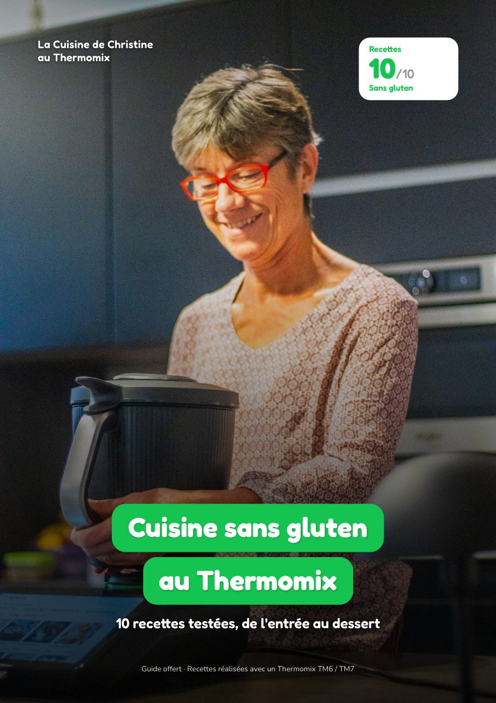
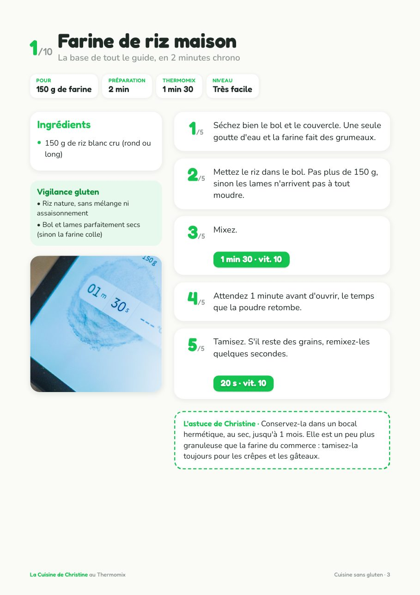
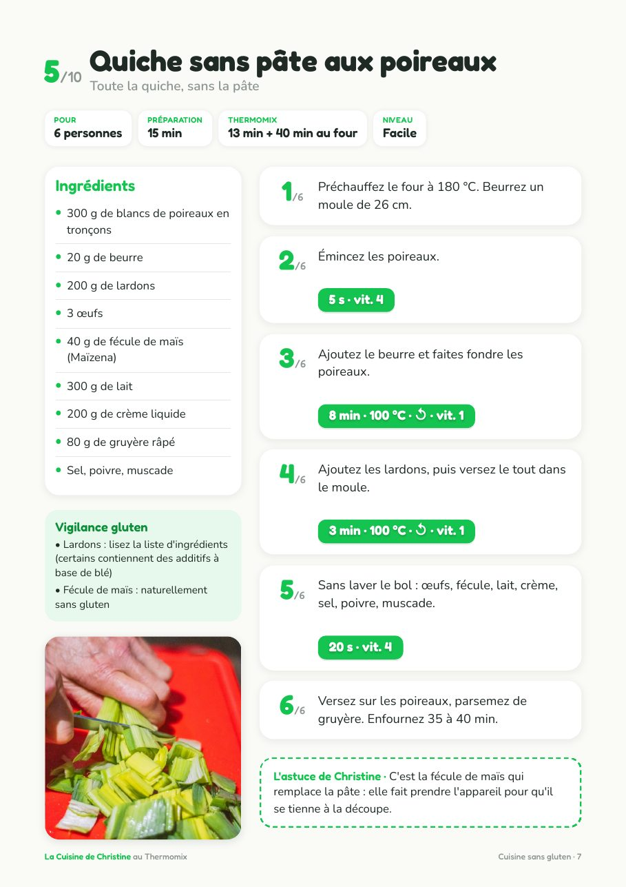
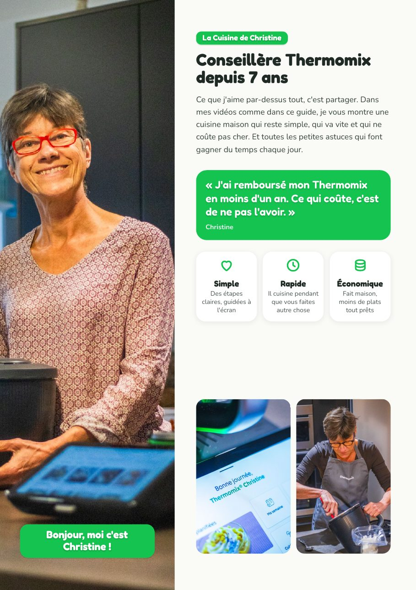

Guide offert · PDF de 14 pages
Cuisine sans gluten au Thermomix : 10 recettes
De la farine de riz maison au fondant au chocolat, 10 recettes naturellement sans gluten, avec tous les réglages temps, température et vitesse. Vous suivez les étapes, le Thermomix fait le reste.
Télécharger le guide gratuit Immédiat, sans formulaire ni inscription.Recettes10/10

Au menu
Les 10 recettes du guide
Une recette par page, avec la liste des ingrédients, les étapes numérotées et les réglages à taper sur l'écran.
- 1/10Farine de riz maisonLa base de tout le guide, en 2 minutes
- 2/10Velouté potimarron et châtaigneLa soupe d'hiver réconfortante
- 3/10Galettes de sarrasinLa vraie galette bretonne
- 4/10Risotto aux champignonsCrémeux sans remuer une seule fois
- 5/10Quiche sans pâte aux poireauxToute la quiche, sans la pâte
- 6/10Cabillaud, légumes et riz au VaromaUn repas complet en une seule cuisson
- 7/10Béchamel à la fécule de maïsLa sauce de tous vos gratins
- 8/10Crêpes à la farine de rizFines et légères
- 9/10Fondant au chocolat et amandeZéro farine, 100 % fondant
- 10/10Crème vanilleLa crème dessert de notre enfance
6 règles du sans glutenÉtiquettes, bol bien lavé, farines rangées à part : les bons réflexes avant de commencer.
Une « vigilance gluten » par recetteLes ingrédients à vérifier, comme les bouillons, les lardons ou le chocolat.
L'astuce de ChristineUn conseil pratique à chaque recette, pour la réussir du premier coup.
Téléchargez le guide
Le PDF est à vous tout de suite, sans formulaire ni inscription.
Télécharger le PDF 14 pages · format A4 · prêt à imprimer
En 3 chiffres
Le sans gluten, sans prise de tête
10recettes du quotidienEntrée, plat, sauce, crêpes et desserts : de quoi tenir toute la semaine.
0 gde farine de bléRiz, sarrasin, fécule de maïs et amande : que des ingrédients naturellement sans gluten.
1 min 30pour votre farine de riz150 g de riz, vitesse 10, et votre farine maison est prête.
Aperçu
Un coup d'œil à l'intérieur
Touchez une page pour l'agrandir. Le reste vous attend dans le PDF.


